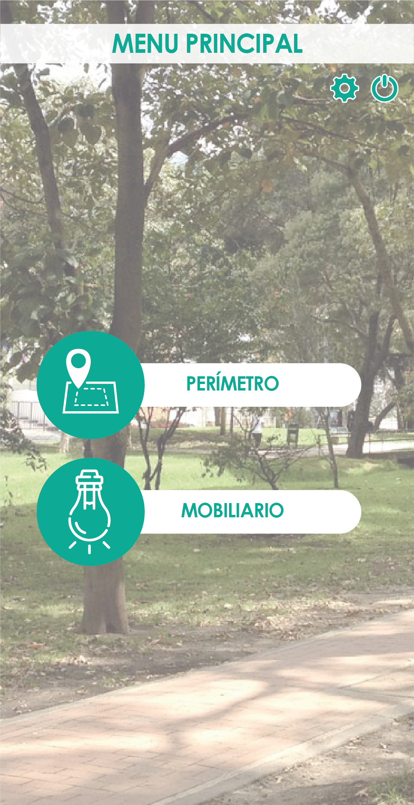

<ion-content class="background-image">

    <ion-card>
    
      <button class="rise"(click)=perimeter()>PERIMETRO</button>
      <button class="see"(click)=mobiliar()>MOBILIARIO</button>
      
      
      <button class="atras" (click)=login()>Atras</button>
    </ion-card>
  
  </ion-content>